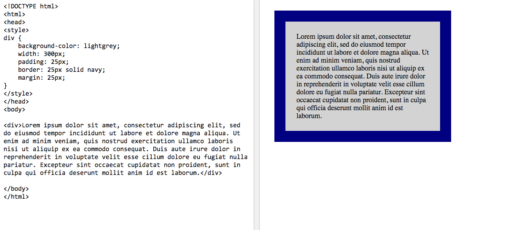

Think Outside the Box (Model)
Post #2
10.18.15
Now that we've explored ways to create a webpage, we'll need to include design elements through CSS. CSS - cascading style sheets - are additional files linked to an HTML index that manipulating stylistic properties. When discussing CSS design and layout properties, we can begin with the "Box Model." Simply put, the box model allows us to add border around our elements and define space between elements.
The example diagram below outlines the difference between the padding, border and margin properties.

It's best to work from the inside out while dissecting a box model. The content in the diagram represents the space where text and images appear within a given element. Padding will include area around the content that cannot be seen. This is used as a means of positioning the content within an element. Next, the border is the space wrapped around the padding and content. When implemented, the border is given a thickness size, style and color. Finally, the margin is transparent space beyond the border. Including a margin will facilitate positioning of one element away from others.
Okay, okay. That may be a lot to handle. Let's go through an example to reinforce the box model properties.
The screenshot above is a basic example of applying box model style properties to a div. Let's work from the inside. The content is the text included in the element. There's is a distinct separation between the text and the blue border. This transparent space is the 25px padding that wraps around the text. As previously mentioned, the blue border encloses the padding and content. The code depicts that it will be 25px thick, a solid line and display in a navy color. Finally, there is a 25px margin added to all sides of the element. The spacing between the edge of the page and the element displays our 25px margin (white space) on each side.
Padding, Borders and Margins are key players while manipulating position through CSS. It will prove to be worthwhile to practice and learn the properties of the box model. Good luck!